산업위생관리산업기사 (2019-04-27 기출문제)
1과목: 산업위생학 개론
1. 산업위생과 관련된 정보를 얻을 수 있는 기관으로 관계가 가장 적은 것은?
- EPA
- AIHA
- OSHA
- ACGIH
(정답률: 84%)

2. ACGIH TLV의 적용상 주의사항으로 맞는 것은?
- TLV는 독성의 강도를 비교할 수 있는 지표가 된다.
- 반드시 산업위생전문가에 의하여 적용되어야 한다.
- TLV는 안전농도와 위험농도를 정확히 구분하는 경계선이 된다.
- 기존의 질병이나 육체적 조건을 판단하기 위한 척도로 사용될 수 있다.
(정답률: 72%)
3. VDT 증후군에 해당하지 않는 질병은?
- 안면피부염
- 눈 질환
- 감광성 간질
- 전리방사선 질환
(정답률: 68%)
4. 피로의 예방대책과 가장 거리가 먼 것은?
- 개인별 작업량을 조절한다.
- 작업환경을 정비, 정돈한다.
- 동적작업을 정적작업으로 바꾼다.
- 작업과정에 적절한 간격으로 휴식시간을 둔다.
(정답률: 93%)
5. 작업환경측정 및 지정측정기관 평가 등에 관한 고시에 있어 정도관리의 실시시기 및 구분에 관한 설명으로 틀린 것은?
- 정기정도관리는 매년 분기별로 각 1회 실시한다.
- 작업환경측정기관으로 지정받고자 하는 경우 특별정도관리를 실시한다.
- 정기정도관리의 세부실시계획은 실무위원회가 정하는 바에 따른다.
- 정기ㆍ특별정도관리 결과 부적합 평가를 받은 기관은 최초 도래하는 해당 정도관리를 다시 받아야 한다.
(정답률: 71%)
6. 실내 환경의 빌딩 관련 질환에 관한 설명으로 틀린 것은?
- 레지오넬라 질환은 주요 호흡기 질병의 원인균 중 하나로서 1년까지도 물속에서 생존하는 균으로 알려져 있다.
- 과민성 폐렴은 고농도의 알레르기 유발물질에 직접 노출되거나 저농도에 지속적으로 노출될 때 발생한다.
- SBS(Sick Building Syndrome)는 점유자 등이 건물에서 보내는 시간과 관계하여 특별한 증상 없이 건강과 편안함에 영향을 받는 것을 의미한다.
- BRI(Building Related Illness)는 건물 공기에 대한 노출로 인해 야기된 질병을 지칭하는 것으로, 증상의 진단이 불가능하며 직접적인 원인은 알 수 없는 질병을 뜻한다.
(정답률: 68%)
7. 원인별로 분류한 직업병과 직종이 잘못 연결된 것은?
- 규페증-채석광, 채광부
- 구내염, 피부염-제강공
- 소화기질병-시계공, 정밀기계공
- 탄저병, 파상풍-피혁제조, 축산, 제분
(정답률: 75%)
8. 피로측정 분류법과 측정대상항목이 올바르게 연결된 것은?
- 자율신경검사-시각, 청각, 촉각
- 운동기능검사-GSR, 연속반응시간
- 순환기능검사-심박수, 혈압, 혈류량
- 심적기능검사-호흡기 중의 산소농도
(정답률: 78%)
9. 1일 12시간 톨루엔(TLV 50ppm)을 취급할 때 노출기준을 Brief&Scala의 방법으로 보정하면 얼마가 되는가?
- 15ppm
- 25ppm
- 50ppm
- 100ppm
(정답률: 75%)
10. 심한 근육노동을 하는 근로자에게 충분히 공급되어야 할 비타민은?
- 비타민 A
- 비타민 B1
- 비타민 C
- 비타민 B2
(정답률: 92%)
11. 교대근무제를 실시하려고 할 때, 교대제관리원칙으로 틀린 것은?
- 야근은 2~3일 이상 연속하지 않을 것
- 근무시간의 간격은 24시간 이상으로 할 것
- 야근 시 가면이 필요하며 이를 제도화 할 것
- 각 반의 근로시간은 8시간을 기준으로 할 것
(정답률: 85%)
12. 일본에서 발생한 중금속 중독사건으로, 이른바 이타이이타이(itai-itai)병의 원인물질에 해당하는 것은?
- 크롬(Cr)
- 납(Pb)
- 수은(Hg)
- 카드뮴(Cd)
(정답률: 78%)
13. 직업과 적성에 있어 생리적 적성검사에 해당하지 않은 것은?
- 체력검사
- 지각동작검사
- 감각기능검사
- 심폐기능검사
(정답률: 80%)
14. 기초대사량이 1.5kcal/min이고, 작업대사량이 225kcal/hr인 사람이 작업을 수행할 때, 작업의 실동률(%)은 얼마인가? (단, 사이또와 오지마의 경험식을 적용한다.)
- 61.5
- 66.3
- 72.5
- 77.5
(정답률: 61%)
15. 피로를 일으키는 인자에 있어 외적 요인에 해당하는 것은?
- 작업 환경
- 적응 능력
- 영양 상태
- 숙련 정도
(정답률: 88%)
16. 석면에 대한 설명으로 틀린 것은?
- 우리나라 석면의 노출기준은 0.5개/cc이다
- 석면관련 질병으로는 석면폐, 악성중피종, 폐암 등이 있다.
- 석면 함유 물질이란 순수한 석면만으로 제조되거나 석면에 다른 섬유물질이나 비섬유질이 혼합된 물질을 의미한다.
- 건축물에 사용되는 석면 대체품은 유리면, 암면 등 인조광물섬유 보온재와 석고보드, 세라믹 섬유 등의 규산칼슘 보온재가 있다.
(정답률: 81%)
17. 사고(事故)와 재해(災害)에 대한 설명 중 틀린 것은?
- 재해란 일반적으로 사고의 결과로 일어난, 인명이나 재산상의 손실을 가져올 수 있는 계획되지않거나 예상하지 못한 사건을 의미한다.
- 재해는 인명의 상해를 수반하는 경우가 대부분인데 이 경우를 상해라 하고, 인명 상해나 물적 손실 등 일체의 피해가 없는 사고를 아차사고(near accident)라고 한다.
- 버드의 법칙은 1:10:30:600이라는 비율을 도출하여 하인리히의 법칙과 다른 면을 보여주고 있다 차이점이라면 30건의 물적 손해만 생긴 소위 무상해 사고를 별도로 구분한 것이다.
- 하인리히 법칙은 한 사람의 중상자가 발생하였다고 하면 같은 원인으로 30명의 경상자가 생겼을 것이고 같은 성질의 사고가 있었으나 부상을 입지 않은 무상해자가 생겼다고 할 때 330번은 무상해, 30번은 경상, 1번의 사망이라는 비율로 된다는 것이다.
(정답률: 79%)
18. 산업안전보건법령에서 정의한 강렬한 소음작업에 해당하는 작업은?
- 90dB이상의 소음이 1일 4시간 이상 발생되는 작업
- 95dB이상의 소음이 1일 2시간 이상 발생되는 작업
- 100dB이상의 소음이 1일 1시간 이상 발생되는 작업
- 110dB이상의 소음이 1일 30분 이상 발생되는 작업
(정답률: 80%)
19. 미국 NOOSH에서 제안된 인양작업(lofting)의 감시기준(AL)에 대한 설정기준의 내용으로 틀린 것은?
- 남자의 99%, 여자의 75%가 작업가능하다.
- 작업강도, 즉 에너지 소비량이 3.5kcal/min이다.
- 5번 요추와 1번 천추에 미치는 압력이 3400N의 부하이다.
- AL을 초과하면 대부분의 근로자들에게 근육 및 골격장애가 발생한다.
(정답률: 57%)
20. 산업안전보건법령상 보건관리자의 자격 기준에 해당하지 않는 자는?
- 「의료법」에 의한 의사
- 「의료법」에 의한 간호사
- 「위생사에 관한 법률」에 의한 위생사
- 「고등교육법」에 의한 전문대학에서 산업보건 관련학과를 졸업한 사람
(정답률: 91%)
2과목: 작업환경측정 및 평가
21. 공기 중에 톨루엔(TLV=100ppm)이 50ppm, 크실렌(TLV=100ppm)이 80ppm, 아세톤(TLV=750ppm)이 1000pp으로 측정되었다면, 이 작업 환경의 노출지수 및 노출기준 초과여부는? (단, 상가작용을 한다고 가정한다.)
- 노출지수:2.63, 초과함
- 노출지수:2.⑤, 초과함
- 노출지수:2.63, 초과하지 않음
- 노출지수:2.83, 초과하지 않음
(정답률: 70%)
22. 다음 중 ()안에 들어갈 내용으로 옳은 것은?
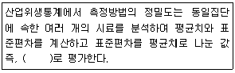
- 분산수
- 기하평균치
- 변이계수
- 표준오차
(정답률: 75%)
23. 통계자료 표에서 M+SD는 무엇을 의미하는가?
- 평균치와 표준편차
- 평균치와 표준오차
- 최빈치와 표준편차
- 중앙치와 표준오차
(정답률: 74%)
24. 어느 작업환경의 소음을 측정하여 보니 허용기준 4시간인 95dB(A)의 소음이 210분 발생되고 있었고, 허용기준 8시간인 90dB(A)의 소음이 270분 발생되고 있었을 때, 노출지수는 약 얼마인가? (단. 상과효과를 고려한다.)
- 1.14
- 1.24
- 1.34
- 1.44
(정답률: 48%)
25. 흡광광도법으로 시료용액의 흡광도를 측정한 결과 흡광도가 검량선의 영역 밖이었다. 시료용액을 2배로 희석하여 흡광도를 측정한 결과 흡광도가 0.4였을 때, 이 시료용액의 농도는?
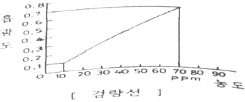
- 20ppm
- 40ppm
- 80ppm
- 160ppm
(정답률: 64%)
26. 충격소음에 대한 설명으로 옳은 것은? (단, 고용노동부 고시를 기준으로 한다.)
- 최대음압수준에 130dB(A) 이상인 소음이 1초 이상의 간격으로 발생하는 것
- 최대음압수준에 130dB(A) 이상인 소음이 10초 이상의 간격으로 발생하는 것
- 최대음압수준에 120dB(A) 이상인 소음이 1초 이상의 간격으로 발생하는 것
- 최대음압수준에 120dB(A) 이상인 소음이 10초 이상의 간격으로 발생하는 것
(정답률: 82%)
27. 다음 중 석면에 관한 설명으로 틀린 것은?
- 석면의 종류에는 백석면, 갈석면, 청석면 등이 있다.
- 시료 채취에는 셀룰로오즈 에스테르 막 여과지를 사용한다.
- 시료 채취 시 유량보정은 시료채취 전ㆍ후에 실시한다.
- 석면분진의 농도는 여과포집법에 의한 중양분석방법으로 측정한다.
(정답률: 52%)
28. 태양광선이 내리쬐지 않는 옥외작업장에서 자연습구온도 20℃, 건구온도 25℃, 흑구온도가 20℃일 때, 습구흡구온도지수(WBGT)는?(오류 신고가 접수된 문제입니다. 반드시 정답과 해설을 확인하시기 바랍니다.)
- 20℃
- 20.5℃
- 22.5℃
- 23℃
(정답률: 79%)
29. 소음측정에 관한 설명으로 틀린 것은? (단, 고용노동부 고시를 기준으로 한다.)
- 소음수준을 측정할 때에는 측정대상이 되는 근로자의 주 작업행동 범위의 작업 근로자 귀 높이에 설치하여야 한다.
- 단위작업장소에서의 소음발생시간이 6시간 이내인 경우에는 발생시간을 등간격으로 나누어 2회 이상 측정하여야 한다.
- 누적소음노출량 측정기로 소음을 측정하는 경우에는 Criteria는 90dB, Exchange Rate는 5dB, Threshold는 80dB로 기기를 설정해야 한다.
- 소음이 1초 이상인 간격을 유지하면서 최대음압수준이 120dB(A)이상의 소음인 경우에는 소음수준에 따른 1분 동안의 발생횟수를 측정하여야 한다.
(정답률: 61%)
30. 유해화학물질 분석 시 침전법을 이용한 적정이 아닌 것은?
- Volhard법
- Mohr법
- Fajans법
- Stiehler법
(정답률: 66%)
31. 작업환경 중 유해금속을 분석할 때 사용되는 불꽃방식 원자흡광광도계에 관한 설명으로 틀린 것은?
- 가격이 흑연로장치에 비하여 저렴하다.
- 분석시간이 흑연로장치에 비하여 적게 소요된다.
- 감도가 높아 혈액이나 소변시료에서의 유해금속 분석에 많이 이용된다.
- 고체시료의 경우 전처리에 의하여 매트릭스를 제거해야 한다.
(정답률: 58%)
32. 다음 중 시료채취방법 중에서 개인시료 채취 시 채취지점으로 옳은 것은? (단, 고용노동부 고시를 기준으로 한다.)
- 근로자의 호흡위치(호흡기를 중심으로 반경 30cm인 반구)
- 근로자의 호흡위치(호흡기를 중심으로 반경 60cm인 반구)
- 근로자의 호흡위치(바닥면을 기준으로 1.2~1.5m 높이의 고정된 위치)
- 근로자의 호흡위치(바닥면을 기준으로 0.9~1.2m 높이의 고정된 위치)
(정답률: 87%)
33. 물질 Y가 20℃, 1기압에서 증기압이 0.⑤mmHg이면, 물질 Y의 공기 중의 포화농도는 약 몇 ppm인가?
- 44
- 66
- 88
- 102
(정답률: 60%)
34. 다음 중 온도표시에 관한 내용으로 틀린 것은? (단, 고용노동부 고시를 기준으로 한다.)
- 미온은 30~40℃를 말한다.
- 온수는 40~50℃를 말한다.
- 냉수는 15℃ 이하를 말한다.
- 찬 곳은 따로 규정이 없는 한 0~15℃의 곳을 말한다.
(정답률: 81%)
35. 유량 및 용량을 보정하는 데 사용되는 1차 표준 장비는?
- 오리피스미터
- 로타미터
- 열선기류계
- 가스치환병
(정답률: 74%)
36. 공기 중 석면 농도의 단위로 옳은 것은?
- 개/cm3
- ppm
- mg/m3
- g/m2
(정답률: 91%)
37. 100g의 물에 40g의 용질 A을 첨가하여 혼합물을 만들었을 때, 혼합물 중 용질 A의 중량 %(wt%)는 약 얼마인가? (단, 용질 A가 충분히 용해한다고 가정한다.)
- 28.6wt%
- 32.7wt%
- 34.5wt%
- 40.0wt%
(정답률: 37%)
38. 회수율 실험은 여과지를 이용하여 채취한 금속을 분석한 것을 보정하는 실험이다. 다음 중 회수율을 구하는 식은?
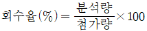
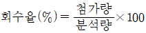
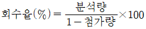
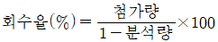
(정답률: 66%)
39. 입자의 가장자리를 이등분하는 직경으로 과대평가의 위험성이 있는 입자상 물질의 직경은?
- 마틴직경
- 페렛직경
- 등거리직경
- 등면적직경
(정답률: 67%)
40. 다음 중 PVC 막여과지를 사용하여 채취하는 물질에 관한 내용과 가장 거리가 먼 것은?
- 유리규산을 채취하여 C-선 회절법으로 분석하는 데 적절하다.
- 6가 크롬, 아연산화물의 채취에 이용된다.
- 압력에 강하여 석탄건류나 증류 등의 공정에서 발생하는 PAHs 채취에 이용된다.
- 수분에 대한 영향이 크지 않기 때문에 공해성 먼지 등의 중량분석을 위한 측정에 이용된다.
(정답률: 47%)
3과목: 작업환경관리
41. 출력 0.01W의 점음원으로부터 100m 떨어진 곳의 음압수준은? (단, 무지향성 음원, 자유공간의 경우)
- 49dB
- 53dB
- 59dB
- 63dB
(정답률: 48%)
42. 공기 중에 발산된 분진입자는 중력에 의하여 침강하는데 스토크스식이 많이 사용되고 있다. 침강속도는 식으로 맞는 것은? (단, V:침강속도, ρ1:먼지밀도, ρ:공기밀도, μ:공기의 점성, d:먼지직경, g:중력가속도)
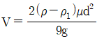
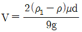
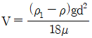
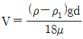
(정답률: 66%)
43. 진폐증을 일으키는 분진 중에서 폐암과 가장 관련이 많은 것은?
- 규산분진
- 석면분진
- 활석분진
- 규조토분진
(정답률: 78%)
44. 다음 중 방진재료와 가장 거리가 먼 것은?
- 방진고무
- 코르크
- 강화된 유리섬유
- 펠트
(정답률: 60%)
45. 다음 중 먼지가 발생하는 작업장에서 가장 완벽한 대책은?
- 근로자가 방진 마스크를 착용한다.
- 발생된 먼지를 습식법으로 제어한다.
- 전체환기를 실시한다.
- 발생원을 완전히 밀폐한다.
(정답률: 60%)
46. 기압에 관한 설명으로 틀린 것은?
- 1기압은 수은주로 760mmHg에 해당한다.
- 수면 하에서의 압력은 수심이 10m 깊어질 때마다 1기압씩 증가한다.
- 수심 20m에서의 절대압은 2기압이다.
- 잠함작업이나 해저터널 굴진작업 내 압력은 대기압보다 높다.
(정답률: 85%)
47. 고압환경에서 작업하는 사람에게 마취작용(다행증)을 일으키는 가스는?
- 이산화탄소
- 질소
- 수소
- 헬륨
(정답률: 86%)
48. 유기용제를 사용하는 도장작업의 관리 방법에 관한 설명으로 옳지 않은 것은?
- 흡연 및 화기사용을 금지시킨다.
- 작업장의 바닥을 청결하게 유지한다.
- 보호장갑은 유기용제에 대한 흡수성이 우수한 것을 사용한다.
- 옥외에서 스프레이 도장작업 시 유해가스용 방독마스크를 착용한다.
(정답률: 80%)
49. 다음 중 유해한 작업환경에 대한 개선대책인 대치의 내용과 가장 거리가 먼 것은?
- 공정의 변경
- 작업자의 변경
- 시설의 변경
- 물질의 변경
(정답률: 78%)
50. 1촉광의 광원으로부터 단위 입체각으로 나가는 광속의 단위는?
- Lumen
- Foot-candle
- Lux
- Lambert
(정답률: 80%)
51. 청력 보호를 위한 귀마개의 감음효과는 주로 어느 주파수 영역에서 가장 크게 나타나는가?
- 회화 음역 주파수 영역
- 기청주파수 영역
- 저주파수 영역
- 고주파수 영역
(정답률: 67%)
52. 피부 보호장구의 재질과 적용 화학물질로 올바르게 연결되지 않은 것은?
- Neoprene 고무-비극성 용제
- Nitrile 고무-비극성 용제
- Butyl-비극성 용제
- Polyvinyl Chloride-수용성 용액
(정답률: 72%)
53. 공기 중 입자상 물질은 여러 기전에 의해 여과지에 채취된다. 차단, 간섭 기전에 영향을 미치는 요소와 가장 거리가 먼 것은?
- 입자크기
- 입자밀도
- 여과지의 공경
- 여과지의 고형분
(정답률: 55%)
54. 일반적으로 사람이 느끼는 최소 진동역치는?
- 25±5dB
- 35±5dB
- 45±5dB
- 55±5dB
(정답률: 73%)
55. 다음 중 산소 결핍의 위험이 적은 작업장소는?
- 전기 용접 작업을 하는 작업장
- 장기간 미사용한 우물의 내부
- 장시간 밀폐된 화학물질의 저장 탱크
- 화학물질 저장을 위한 지하실
(정답률: 84%)
56. 저온환경에서 발생할 수 있는 건강장해에 관한 설명으로 틀린 것은?
- 전신체온강하는 장시간의 한랭 노출 시 체열의 손실로 인해 발생하는 급성 중증장해이다.
- 제3도 동상은 수포와 함께 광범위한 삼출성 염증이 일어나는 경우를 말한다.
- 피로가 극에 달하면 체열의 손실이 급속히 이루어져 전신의 냉각상태가 수반된다.
- 참호족은 지속적인 국소의 산소결핍 때문이며 자온으로 모세혈관 벽이 손상되는 것이다.
(정답률: 74%)
57. 저온환경이 인체에 미치는 영향으로 옳지 않은 것은?
- 식욕감소
- 혈압변화
- 피부혈관의 수축
- 근육긴장
(정답률: 80%)
58. 다음 중 영상표시단말기(VDT)로 작업하는 사업장의 환경관리에 대한 설명과 가장 거리가 먼 것은?
- 작업 중 시야에 들어오는 화면, 키보드, 서류 등의 주요 표면 밝기는 차이를 두어 입체감이 있도록 한다.
- 실내조명은 화면과 명암의 대조가 심하지 않고 동시에 눈부시지 않도록 하여야 한다.
- 정전기 방지는 접지를 이용하거나 알콜 등으로 화면을 세척한다.
- 작업장 주변 환경의 조도는 화면의 바닥색상이 검정색일 때에는 300~500Lux를 유지하면 좋다.
(정답률: 68%)
59. 다음 중 밀폐공간 작업에서 사용하는 호흡보호구로 가장 적절한 것은?
- 방진마스크
- 송기마스크
- 방독마스크
- 반명형마스크
(정답률: 89%)
60. 밀폐공간 작업 시 작업의 부하인자에 대한 설명으로 틀린 것은?
- 모든 옥외작업의 경우와 거의 같은 양상의 근력부하를 갖는다.
- 탱크바닥에 있는 슬러지 등으로부터 황화수소가 발생한다.
- 철의 녹 사이에 황화물이 혼합되어 있으면 아황산가스가 발생할 수 있다.
- 산소농도가 25% 이하가 되면 산소결핍증이 되기 쉽다.
(정답률: 90%)
4과목: 산업환기
61. 아세톤이 공기 중에 10000ppm으로 존재한다. 아세톤 증기비중이 2.0이라면, 이 때 혼합물의 유효비중은?
- 0.98
- 1.01
- 1.04
- 1.07
(정답률: 56%)
62. 터보팬형 송풍기의 특징을 설명한 것으로 틀린 것은?
- 소음은 비교적 낮으나 구조가 가장 크다.
- 통상적으로 최고속도가 높으므로 효율이 높다.
- 규정풍량 이외에서는 효율이 갑자기 떨어지는 단점이 있다.
- 소요정압이 떨어져도 동력은 크게 상승하지 않으므로 시설저항 및 운전상태가 변하여도 과부하가 걸리지 않는다.
(정답률: 61%)
63. 국소배기장치에서 송풍량 30m3/min이고, 덕트의 직경이 200mm이면, 이 때 덕트 내의 속도는 약 몇 m/s인가? (단, 원형덕트인 경우이다.)
- 13
- 16
- 19
- 21
(정답률: 62%)
64. 국소배기장치에서 후드를 추가로 설치해도 쉽게 정압 조절이 가능하고, 사용하지 않는 후드를 막아 다른 곳에 필요한 정압을 보낼 수 있어 현장에서 가장 편리하게 사용할 수 있는 압력 균형방법은?
- 댐퍼 조절법
- 회전수 변화
- 압력 조절법
- 안내익 조절법
(정답률: 83%)
65. 일반적으로 국소배기장치를 가동할 경우에 가장 적합한 상황에 해당하는 것은?
- 최종 배출구가 작업장 내에 있다.
- 사용하지 않는 후드는 댐퍼로 차단되어 있다.
- 증기가 발생하는 도장 작업지점에는 여과식 공기정화장치가 설치되어 있다.
- 여름철 작업장 내에서는 오염물질 발생장소를 향하여 대형 선충기가 바람을 불어주고 있다.
(정답률: 65%)
66. 덕트 내에서 압력손실이 발생되는 경우로 볼 수 없는 것은?
- 정압이 높은 경우
- 덕트 내부면과 마찰
- 가지 덕트 단면적이 변화
- 곡관이나 관의 확대에 의한 공기의 속도변화
(정답률: 59%)
67. 접착제를 사용하는 A공정에서는 메틸에틸케톤(MEK)과 톨루엔이 발생, 공기 중으로 완전혼합된다. 두 물질은 모두 마취작용을 하므로 상가효과가 있다고 판단되며, 각 물질의 사용 정보가 다음과 같을 때 필요환기량(m3/min)은 약 얼마인가? (단, 주위는 25℃, 1기압 상태이다.)
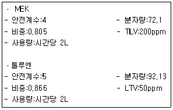
- 182
- 558
- 765
- 948
(정답률: 46%)
68. 국소배기장치를 유지ㆍ관리하기 위한 자체검사 관련 필수 측정기와 관련이 없는 것은?
- 절연저항계
- 열선풍속계
- 스모크테스터
- 고도측정계
(정답률: 63%)
69. 그림과 같은 송풍기 성능곡선에 대한 설명으로 맞는 것은?
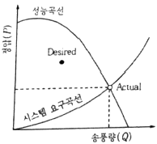
- 송풍기의 선정이 적절하여 원했던 송풍량이 나오는 경우이다.
- 성능이 약한 송풍기를 선정하여 송풍량이 작게 나오는 경우이다.
- 너무 큰 송풍기를 선정하고, 시스템 압력손실도 과대평가된 경우이다.
- 송풍기의 선정은 적절하나 시스템의 압력손실이 과대평가되어 송풍량이 예상보다 더 많이 나오는 경우이다.
(정답률: 52%)
70. 직경이 38cm, 유효높이 5m인 원통형 백필터를 사용하여 0.5m3/s의 함진가스를 처리할 때, 여과속도(cm/s)은 약 얼마인가?
- 6.4
- 7.4
- 8.4
- 9.4
(정답률: 27%)
71. 전체환기가 필요한 경우가 아닌 것은?
- 배출원이 고정되어 있을 때
- 유해물질이 허용농도 이하일 때
- 발생원이 다수 분산되어 있을 때
- 오염물질이 시간에 따라 균일하게 발생 될 때
(정답률: 69%)
72. 24시간 가동되는 작업장에서 환기하여야 할 작업장 실내의 체적은 3000m3이다. 환기시설에 의해 공급되는 공기의 유량이 4000m3/hr일 때, 이 작업장에서의 시간당 환기횟수는 얼마인가?
- 1.2회
- 1.3회
- 1.4회
- 1.5회
(정답률: 63%)
73. 산업환기에서 의미하는 표준공기에 대한 설명으로 맞는 것은?
- 표준공기는 0℃, 1기압(760mmHg)인 상태이다.
- 표준공기는 21℃, 1기압(760mmHg)인 상태이다.
- 표준공기는 25℃, 1기압(760mmHg)인 상태이다.
- 표준공기는 32℃, 1기압(760mmHg)인 상태이다.
(정답률: 73%)
74. 표준공기 21℃(비중량 r=1.2kg/m3)에서 800m/min의 유속으로 흐르는 공기의 속도압은 몇 mmH2O인가?
- 10.9
- 24.6
- 35.6
- 53.2
(정답률: 32%)
75. 탱크에서 증발, 탈지와 같이 기류의 이동이 없는 공기 중에서 속도 없이 배출되는 작업조건인 경우 제어속도의 범위로 가장 적절한 것은? (단, 미국정부산업 위생전문가협의회의 권고기준이다.)
- 0.10~0.15m/s
- 0.15~0.25m/s
- 0.25~0.50m/s
- 0.50~1.00m/s
(정답률: 50%)
76. SF6가스를 이용하여 주택의 침투(자연환기)를 측정하려고 한다. 시간(t)=0분일 때, SF6농도는 40μg/m3이고, 시간(t)=30분일 때, 7μg/m3였다. 주택의 체적이 1500m3이라면, 이 주택의 침투(또는 자연환기)량은 몇 m3/hr인가? (단, 기계환기는 전혀 없고, 중간과정의 결과는 소수점 셋째자리에서 반올림하여 구한다.)
- 5130
- 5235
- 5335
- 5735
(정답률: 40%)
77. 잔지부품을 납땜하는 공정에 외부식 국소배기 장치를 설치하고자 한다. 후드의 규격은 가로ㆍ세로 각각 400mm이고, 제어거리를 20cm, 제어속도는 0.5m/s, 반송속도를 1200/min으로 하고자 할 때 필요 소요풍량(m3/min)은? (단, 플랜지는 없으며, 자유공간에 설치한다.)
- 13.2
- 15.6
- 16.8
- 18.4
(정답률: 30%)
78. 전지집진기의 장점이 아닌 것은?
- 운전 및 유지비가 비싸다.
- 넓은 범위의 입경과 분진농도에 집진효율이 높다.
- 압력손실이 낮으므로 송풍기의 가동비율이 저렴하다.
- 고온가스를 처리할 수 있어 보일러와 철강로 등에 설치할 수 있다.
(정답률: 58%)
79. 덕트의 설치를 결정할 때 유의사항으로 적절하지 않은 것은?
- 청소구를 설치한다.
- 곡관의 수를 적게 한다.
- 가급적 원형 덕트를 사용한다.
- 가능한 곡관의 곡률 반경을 작게 한다.
(정답률: 70%)
80. 푸쉬-풀(push-pull) 후드에서 효율적인 조(tank)의 길이로 맞는 것은?
- 1.0~2.2m
- 1.2~2.4m
- 1.4~2.6m
- 1.5~3.0m
(정답률: 67%)